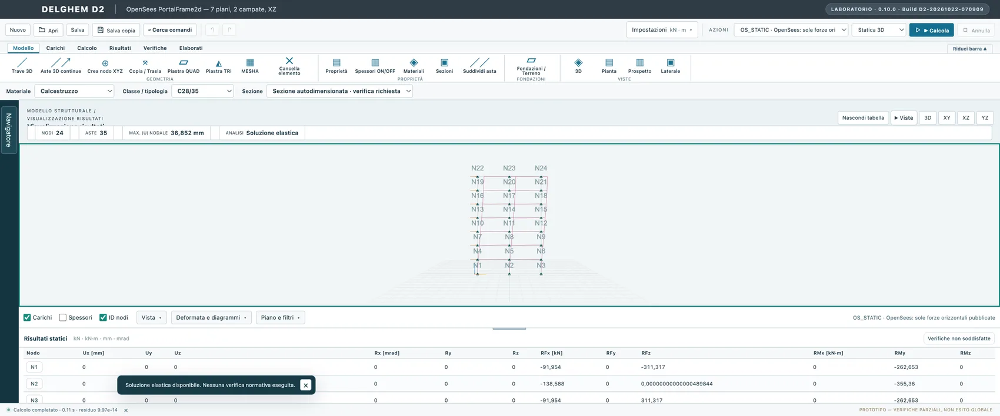

ENGINEERING / FEM ON MAC
Structural FEM on Apple Silicon.
DÈLGHEM is structural engineering software for macOS and Apple Silicon. The current candidate is a packaged ARM64 Electron application with local numerical runtimes; it is not written in Swift and does not require a virtualised Windows desktop.

From model to structural response
Nodes, members, surface elements, loads and restraints form the structural model. Implemented analysis paths return results traceable to inputs and units. Static, modal and specialist workflows do not share identical qualification scopes.
Independent numerical comparison
The FEM components and local numerical runtimes are checked against reference benchmarks and independent solvers where supported. Some specialised analyses, including nonlinear dynamics, have validation gaps.
A feature is not a structural certificate
A menu item or drawing does not certify code compliance or a fully verified construction design. Unfavourable and review-required results remain explicitly visible.